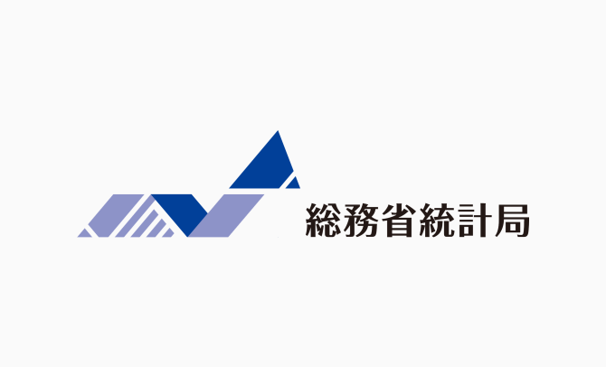
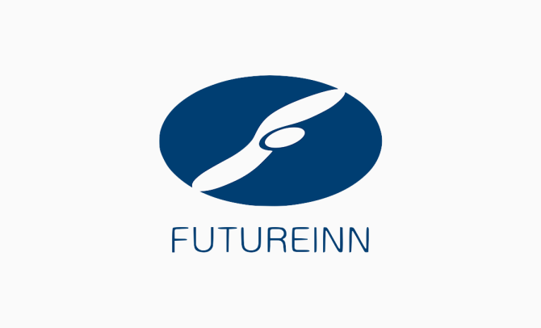
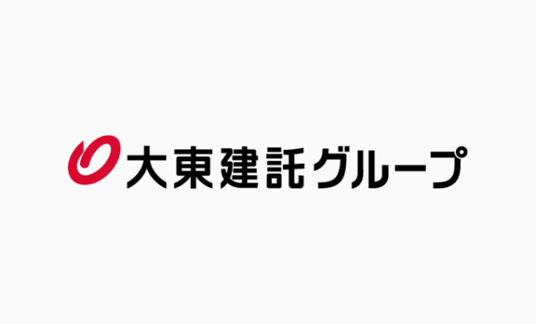
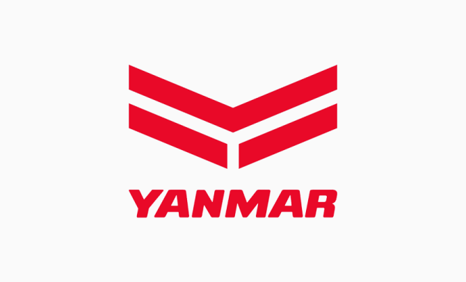
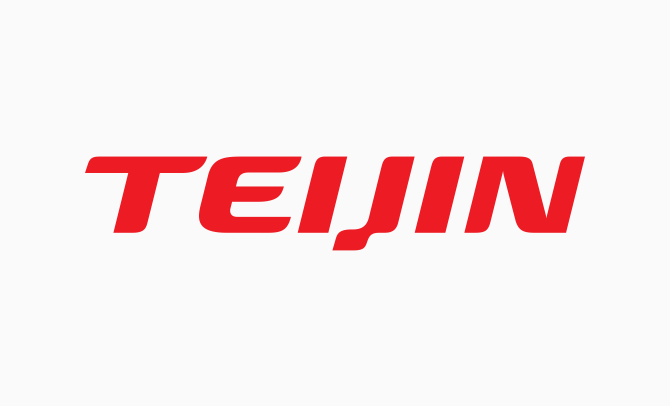
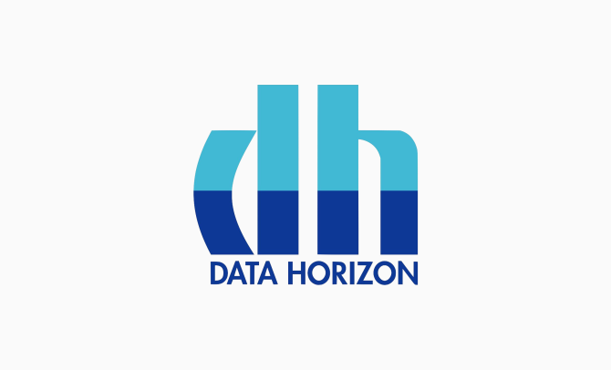
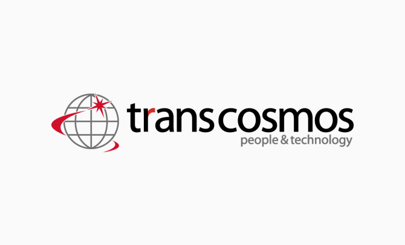
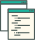

- 
- 
- 
- 
- 
- 
- 
システム、マーケティング、サービス運用担当の方 こんなお悩みありませんか？
-
システム担当の方
サイト全体の細かな変更点まで
効率良く把握したい… -
マーケティング担当の方
競合サイトの情報更新を
常にチェックするのは面倒… -
サービス運用担当の方
膨大な情報の中から
必要なものだけ見つけるのは大変…
-
システム担当の方
サイト全体の細かな変更点まで
効率良く把握したい… -
マーケティング担当の方
競合サイトの情報更新を
常にチェックするのは面倒… -
サービス運用担当の方
膨大な情報の中から
必要なものだけ見つけるのは大変…
cervn -サーブン-なら
より正確に、欲しい時だけ、
欲しい情報を自動で手に入れられます
cervnで、
さらなる時間の有効活用が可能に。
今まで手動で行っていたあらゆる手間が、cervnを使えば一気に解決できます。
あなたが本来時間を使うべき仕事に集中できるよう、面倒な作業はcervnにお任せください。
cervnの特徴を活用した
具体的な事例
-
地方自治体・行政機関サイト
チャンスにつながる新着情報を見逃すことなく、省力化を実現
行政機関等のニュースや入札情報等を監視し、特定キーワードのアラートを設定。ビジネスの機会を見逃しません。
-
ニュースの監視
サイト確認の手間の省力化
情報の素早いキャッチアップ最新のニュースを常に把握し、顧客企業の動きをキャッチ。特定のキーワードを設定することで、必要なニュースだけをアラート可能です。
-
グローバル企業の法規監視
ビジネスに影響する重大な情報を素早くキャッチしてリスクを回避
各国法規や規約の変更を監視し、わずかな更新もアラート通知で確認が可能になります。
-
プレスリリースアラート
競合の動向を逐一チェック
競合企業のプレスリリース情報、キャンペーンやセール情報、イベント情報の監視で、競合の動向をリアルタイムでチェックできます。
-
SNSメディアの監視
SNSも監視対象。画面キャプチャで
残せるから確認も簡単 競合の動向を逐一チェックソーシャルメディアを監視し、特定キーワード出現時の画面キャプチャを保存します。
-
WEBマーケティングの活動記録
継続的な監視で社内外の施策情報をログに残せる
対象サイトを継続的に監視することで自社及び企業サイトのオンライン施策を記録することが可能になります。
-
地方自治体・行政機関サイト
チャンスにつながる新着情報を見逃すことなく、省力化を実現
行政機関等のニュースや入札情報等を監視し、特定キーワードのアラートを設定。ビジネスの機会を見逃しません。
-
ニュースの監視
サイト確認の手間の省力化
情報の素早いキャッチアップ最新のニュースを常に把握し、顧客企業の動きをキャッチ。特定のキーワードを設定することで、必要なニュースだけをアラート可能です。
-
グローバル企業の法規監視
ビジネスに影響する重大な情報を素早くキャッチしてリスクを回避
各国法規や規約の変更を監視し、わずかな更新もアラート通知で確認が可能になります。
-
プレスリリースアラート
競合の動向を逐一チェック
競合企業のプレスリリース情報、キャンペーンやセール情報、イベント情報の監視で、競合の動向をリアルタイムでチェックできます。
-
SNSメディアの監視
SNSも監視対象。画面キャプチャで
残せるから確認も簡単 競合の動向を逐一チェックソーシャルメディアを監視し、特定キーワード出現時の画面キャプチャを保存します。
-
WEBマーケティングの活動記録
継続的な監視で社内外の施策情報をログに残せる
対象サイトを継続的に監視することで自社及び企業サイトのオンライン施策を記録することが可能になります。
-
キーワード登録
キーワード検査をする場合に、検査するキーワードを登録する。
-
シグナルアドレス登録
変化シグナルを受け取る担当者のメールアドレス登録／編集
-

ページ比較ハイライト
前回取得したページと今回取得したページの変更内容を表示する。（検出できた変更部分をハイライトして比較）
-

ファイル比較
Webページ上のファイルが更新された際、新旧のファイルを比較する。
-
画面キャプチャ
前回と比較して変化のあったページのスクリーンショットを撮影する。
-
プロジェクト管理
モニタリングするテーマごとにプロジェクトを設定する。
-
期間登録
プロジェクトごとに、モニタリングする頻度を設定する。
-
URLリスト登録
プロジェクトごとに、モニタリングするURLをCSVリストで一括登録可能。
-
サービス起動
プロジェクトごとにサービスの起動、停止を設定する。
-
モニタリングリスト
変化のあったページを一覧化する。
ご利用企業様の声
cervnはあらゆる業界の企業様に
ご利用いただいています。
目的 各国法規サイトの更新状況チェック
効果 約120時間が2〜3時間に短縮
ヤンマーホールディングス株式会社様
法規制の調査・最新版の管理を行っており、世界各国法規サイトの更新状況の把握にCERVNを活用しています。
人手で作業していた頃は、限られた工数でおよそ1,300サイトの確認は、年１回が精一杯でした。
CERVN導入後は、変更の可能性のあるサイトだけを見ることによって、確認するサイト数が大幅に減少しました。更新前の内容との比較もスクリーンショットを並べてみることができ、且つ変化箇所がハイライト表示されるため、一目瞭然です。確認時間を大幅に低減できたので、確認の頻度を年1回から年4回にでき、より最新の法規情報の社内共有に繋がっています。
結果、CERVN導入により大幅な工数低減を実現することができ、社内業務効率化発表の場でも紹介しました。その成果は確実に上がっています。
まずはお気軽にご相談ください
使い方のレクチャーを実施しています。
ツールの具体的な操作方法はもちろん、お客様にあった利用シーンや有効な活用方法についてもお気軽にご相談ください。
よくあるご質問
運営会社
- 会社名
- 株式会社キーウォーカー
- 設立
- 平成12年11月22日
- 資本金
- 8,400万円（資本準備金含む）
- 代表者
- 真瀬 正義
- 事業内容
- 自然言語処理エンジンの研究開発 / ビッグデータの収集・整理・蓄積・可視化・分析ソリューションの提供 / ルーチン業務の自動処理システム提案
- 主要取引先
- 共同ピーアール株式会社/ 株式会社ファーストリテイリング/ アデコ株式会社/ カシオ計算機株式会社/ 日本放送協会/ 株式会社ZOZO/ 株式会社東芝/ パナソニック株式会社/ 株式会社リクルート住まいカンパニー/ 総務省/ 日本航空株式会社/ 中部国際空港株式会社/ 特許業務法人スズエ国際特許事務所
- 所在地
- 〒106-0032 東京都港区六本木七丁目15番7号 新六本木ビル7F